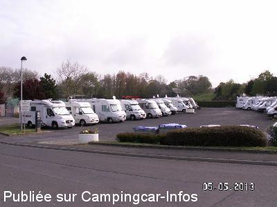
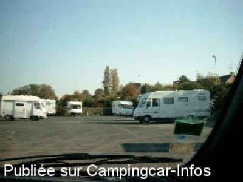
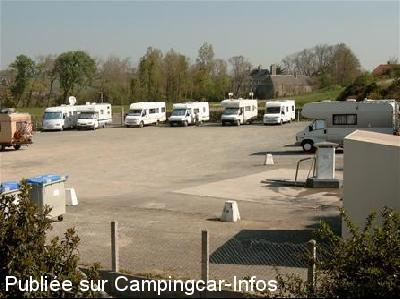
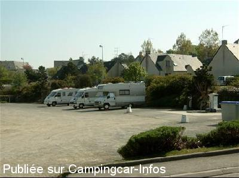

ASN = Aire de services avec stationnement nuit possible de :
SAINT PAIR SUR MER
(N° 485)
Accès/adresse :
Avenue Jozeau-Marigné
50380 SAINT PAIR SUR MER
50380 SAINT PAIR SUR MER
Latitude : (Nord) 48.817° Décimaux ou 48° 49′ 1′′
Longitude : (Ouest) -1.56985° Décimaux ou -1° 34′ 11′′
Tarif : 2016
Stationnement 24 h : 8 €
Services : 2 €
Paiement par carte bancaire pour le stationnement
Type de borne : FLOT BLEU
Services :


Autres informations :
50 emplacements
Tél : +33(0)233 505 277
http://www.saintpairsurmer.fr/fr/vivre-a-saint-pair-sur-mer/equipements-communaux/aire-camping-car.asp

Le 22/08/2014 par Gilles

Le 27/05/2004 par ecoute

Le 10/05/2003 par Bibi41

Le 10/05/2003 par Bibi41
de
Nenettemamita
le 24/04/2016 :
§ Nous y avons passé 2 nuits en avril 2016, très belle aire, 8 euros pour le stationnement.Les services sont à 2 euros l'un,. Pour les enfants nombreux jeux ;toilettes automatiques, parcours santé pour adultes,commerces et plage à proximité et surtout beaucoup de propreté autour et sur l'aire.
Merci la Municipalité..
§ Nous y avons passé 2 nuits en avril 2016, très belle aire, 8 euros pour le stationnement.Les services sont à 2 euros l'un,. Pour les enfants nombreux jeux ;toilettes automatiques, parcours santé pour adultes,commerces et plage à proximité et surtout beaucoup de propreté autour et sur l'aire.
Merci la Municipalité..
de
le promeneur
le 24/10/2015 :
Bonjour,
lors de notre arrivée sur l'aire, le distributeur de ticket avec le code pour repartir ne fonctionnait pas.
Nous sommes allé le signaler à l'office de tourisme, et dans les 10 mn, les services techiques de la ville étaient là pour réparer le distributeur et nous donner un ticket de sortie du parking, tout ça dans la plus grande disponibilté et courtoisie possible.
La réactivité de ce service est à souligner pour cette vile.
Bonjour,
lors de notre arrivée sur l'aire, le distributeur de ticket avec le code pour repartir ne fonctionnait pas.
Nous sommes allé le signaler à l'office de tourisme, et dans les 10 mn, les services techiques de la ville étaient là pour réparer le distributeur et nous donner un ticket de sortie du parking, tout ça dans la plus grande disponibilté et courtoisie possible.
La réactivité de ce service est à souligner pour cette vile.
de
André
le 14/07/2015 :
Nous avons passé quelques nuits sur une aire calme en juillet 2015.Des travaux ont été réalisés et le prix est de 7€ pour 24h à régler uniquement par carte. L'aire a été agrandie et peut accueillir 50 camping car.
Nous avons passé quelques nuits sur une aire calme en juillet 2015.Des travaux ont été réalisés et le prix est de 7€ pour 24h à régler uniquement par carte. L'aire a été agrandie et peut accueillir 50 camping car.
de
Tatave14
le 04/11/2014 :
§ Nous venons de passé deux nuits sur cette aire,calme la nuit,agréable et pour 5 Euro les 24 Heures,commerce juste a coté .De belle balade a faire sur le bord de plage.Village a découvrir
§ Nous venons de passé deux nuits sur cette aire,calme la nuit,agréable et pour 5 Euro les 24 Heures,commerce juste a coté .De belle balade a faire sur le bord de plage.Village a découvrir
de
gege
le 08/02/2011 :
bonjour nous sommes allés a st pair dimanche et lundi la borne est hors servivce sinon aire agreable
bonjour nous sommes allés a st pair dimanche et lundi la borne est hors servivce sinon aire agreable
de
Jean-Pierre 35
le 05/09/2010 :
Nous avons passé de nouveau deux nuits sur cette aire, très fréquentée, mais si bien située, pratiquement en plein centre (150m) et proche de tous commerces. Très belle plage et agréables promenades. Merci encore une fois à la municipalité.
Nous avons passé de nouveau deux nuits sur cette aire, très fréquentée, mais si bien située, pratiquement en plein centre (150m) et proche de tous commerces. Très belle plage et agréables promenades. Merci encore une fois à la municipalité.
de
Stankiki
le 23/07/2010 :
Aire très fréquentée.(environ 30 CC ).Pour nous, une étape entre le haut du Cotentin ou nous demeurons et le bas du département avant de poursuivre notre route. Charmant village ,commerces à proximité ,la mer à quelques pas,le calme....
Nous l'aimons toujours autant. A conseiller.
Aire très fréquentée.(environ 30 CC ).Pour nous, une étape entre le haut du Cotentin ou nous demeurons et le bas du département avant de poursuivre notre route. Charmant village ,commerces à proximité ,la mer à quelques pas,le calme....
Nous l'aimons toujours autant. A conseiller.
de
Grumly
le 15/03/2010 :
Camping-cariste et aussi Saint Pariais, je peux dire que cette aire a un certain succès, il y a toujours des camping-cars même en plein hiver. Elle est donc souvent saturée même en hors saison, lors des week-ends remarquables.
Certains parfois stationnent sur le parking de Marché plus. A deux pas du centre ville et des commerces, très proche de la plage et du casino. Attention, l'été, il y a parfois un cirque qui s'installe pour quelques jours sur le terrain à coté, ça fait donc du bruit et du monde pendant les représentations.
Camping-cariste et aussi Saint Pariais, je peux dire que cette aire a un certain succès, il y a toujours des camping-cars même en plein hiver. Elle est donc souvent saturée même en hors saison, lors des week-ends remarquables.
Certains parfois stationnent sur le parking de Marché plus. A deux pas du centre ville et des commerces, très proche de la plage et du casino. Attention, l'été, il y a parfois un cirque qui s'installe pour quelques jours sur le terrain à coté, ça fait donc du bruit et du monde pendant les représentations.
de
Auvin J-P
le 12/09/2009 :
A 11 h, aire complète et visiblement, il y en a qui s'étaient installés comme en camping ! Ceci dit, il n'y a qu'une trentaine de places. §
A 11 h, aire complète et visiblement, il y en a qui s'étaient installés comme en camping ! Ceci dit, il n'y a qu'une trentaine de places. §
de
Jean-Pierre 35
le 11/08/2009 :
Stationnement 5€ pour 24h et par horodateur. Borne de services (2€) pour 2 camping-cars. Emplacements pour seulement une trentaine de camping-cars, le reste est réservé aux clients des tennis (ce qui est tout à fait normal). En cette saison, il est conseillé d'arriver tôt.
Juste en face du parking (très calme la nuit), un Marché+, ouvert tous les jours de 7h à 21h et le dimanche matin. A quelques mètres sur le parking VL, des WC publics, propres. Tous commerces en centre-ville à proximité. Plage non surveillée à 100m et surveillée à 300m. Charmante petite ville, belles promenades en bord de mer. Merci à la municipalité de St Pair sur Mer de si bien nous accueillir.
Stationnement 5€ pour 24h et par horodateur. Borne de services (2€) pour 2 camping-cars. Emplacements pour seulement une trentaine de camping-cars, le reste est réservé aux clients des tennis (ce qui est tout à fait normal). En cette saison, il est conseillé d'arriver tôt.
Juste en face du parking (très calme la nuit), un Marché+, ouvert tous les jours de 7h à 21h et le dimanche matin. A quelques mètres sur le parking VL, des WC publics, propres. Tous commerces en centre-ville à proximité. Plage non surveillée à 100m et surveillée à 300m. Charmante petite ville, belles promenades en bord de mer. Merci à la municipalité de St Pair sur Mer de si bien nous accueillir.
de
francois saysset
le 28/04/2009 :
Aire très propre et calme. Borne opérationnelle. Plage magnifique et commerces à 100 mètres.
Aire très propre et calme. Borne opérationnelle. Plage magnifique et commerces à 100 mètres.
de
mamidette76
le 17/02/2009 :
Sommes retournés sur l'aire de Saint Pair sur Mer. La borne ne fonctionne pas ce qui rend cher 5€ par 24h. Toilettes publiques angle parking super U, à côté téléphone publique.
Sommes retournés sur l'aire de Saint Pair sur Mer. La borne ne fonctionne pas ce qui rend cher 5€ par 24h. Toilettes publiques angle parking super U, à côté téléphone publique.
de
daniel et nadine 76
le 10/05/2008 :
Aire très calme et prope, commerces agréables et jeux pour les enfants, plage à 100 m. La borne ne marche pas!
Aire très calme et prope, commerces agréables et jeux pour les enfants, plage à 100 m. La borne ne marche pas!
de
Marc Despretz
le 18/04/2008 :
Nous sommes restés deux jours début avril, tout est parfait, très belle ville, la plage est toute proche, et aussi à 50 m une supérette ouverte à partir de 70 et où l'on trouve de tout. Paiement du parking par horodateur, services gratuits. A retenir pour une prochaine fois, merci la Ville.
Nous sommes restés deux jours début avril, tout est parfait, très belle ville, la plage est toute proche, et aussi à 50 m une supérette ouverte à partir de 70 et où l'on trouve de tout. Paiement du parking par horodateur, services gratuits. A retenir pour une prochaine fois, merci la Ville.